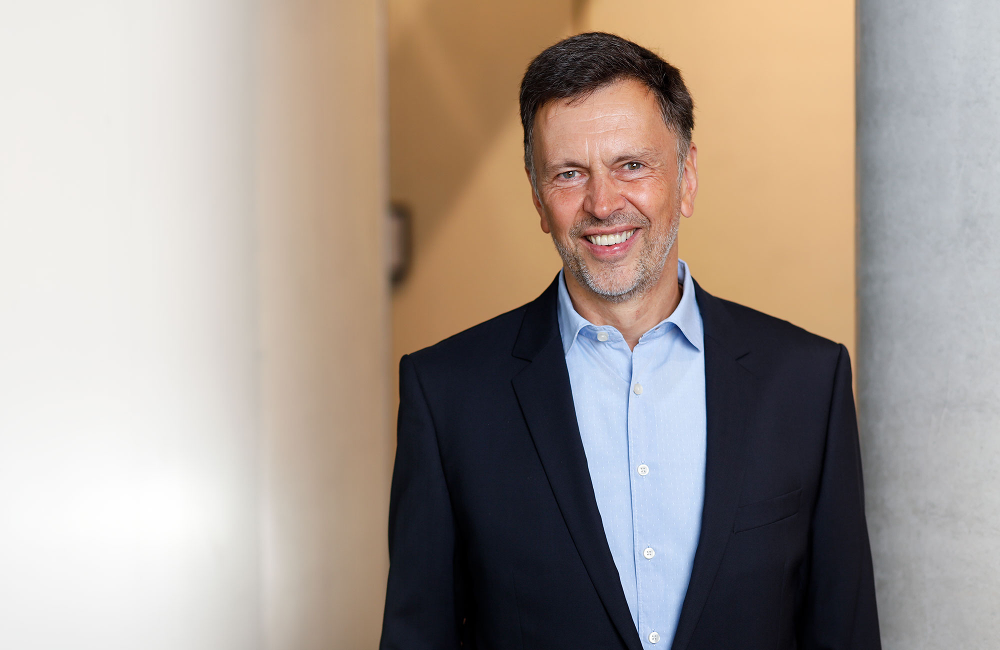
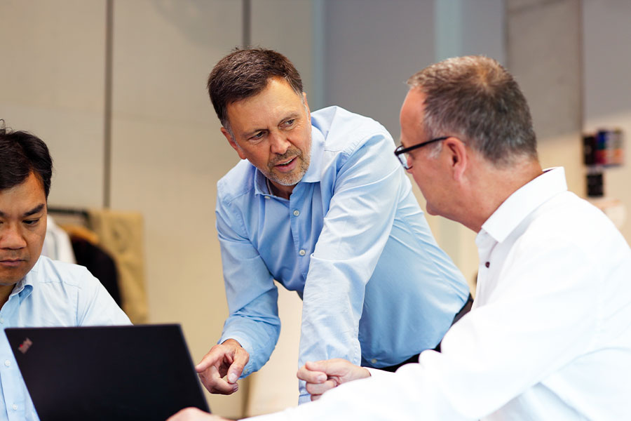
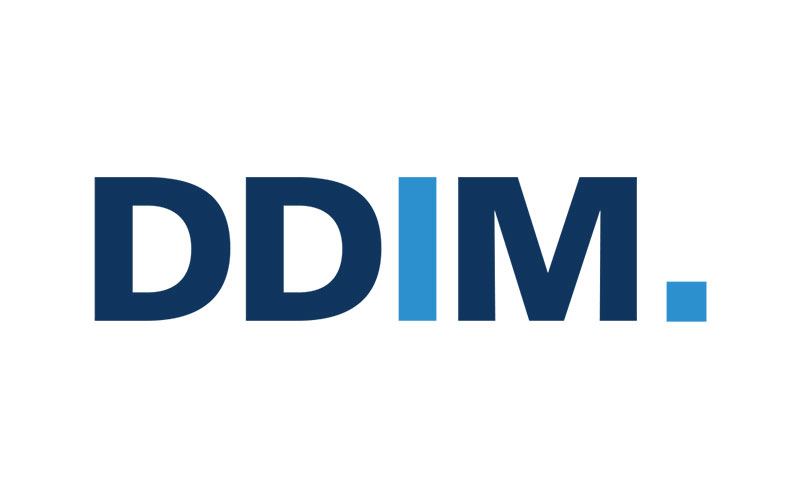

Analyse & Beratung
Basis meiner Arbeit ist oft die eingehende Analyse der Situation. Darauf aufbauend berate ich und gehe an die Maßnahmenplanung.
Mein Name ist Oliver Merkle. Ich bin Berater sowie Interim- und Krisenmanager mit Fokus auf Produktion, Supply Chain Management und Operational Excellence.

Besonderen Wert lege ich auf Continuous Improvement und auf die Nachhaltigkeit einer Transformation. Dabei ist es wichtig, die Mitarbeiter mitzunehmen, so dass Erfolge bleiben, wenn ich das Unternehmen wieder verlasse.
Basis meiner Arbeit ist oft die eingehende Analyse der Situation. Darauf aufbauend berate ich und gehe an die Maßnahmenplanung.
Die Umsetzung steht im Vordergrund. Es geht um Aufbau, Entwicklung, Implementierung und darum, Dinge miteinander zu verbinden.
Wenn Zeit knapp ist, müssen gezielt Maßnahmen ergriffen werden, um Schieflagen schnell zu beheben und Turnarounds erfolgreich zu managen.
Branchenerfahrung hat Wert. Neue Impulse kommen aber eher von jemandem, der erfolgreiche Unternehmen anderer Branchen gesehen hat. Das eröffnet Möglichkeiten und schafft Perspektive.

Meine Erfahrung aus der amerikanischen Automobilzulieferindustrie im Bereich Continuous Improvement.Oliver Merkle
Du siehst die Dinge immer positiv und gehst sie konstruktiv an. Das Besondere, Du machst das auf eine sehr persönliche und menschliche Art, eine Eigenschaft, die man leider nicht mehr so oft sieht.
Mit dem Continuous Improvement Managementsystem hast Du eine sehr gute Basis geschaffen, so dass wir uns hier in EMEA jedes Jahr selbst übertroffen haben, und das trotz aller Schwierigkeiten.
It has been great to be able to work with you in certain topics over the past 4 years, you were always somebody willing to support and look for solutions regardless of the challenges and difficulties ahead.
Als Werkleiter haben Sie bewiesen, dass Menschen durch positive Motivation größere Leistungen erbringen.
Schieflage mit Zeitdruck, Integration nach einem Zukauf oder ein Werk, das stabiler laufen soll: Ein erstes Gespräch klärt, ob und wie ich helfen kann.

Oliver Merkle
Interim Manager & Berater
Friedrich-Ebert-Str. 30
31137 Hildesheim